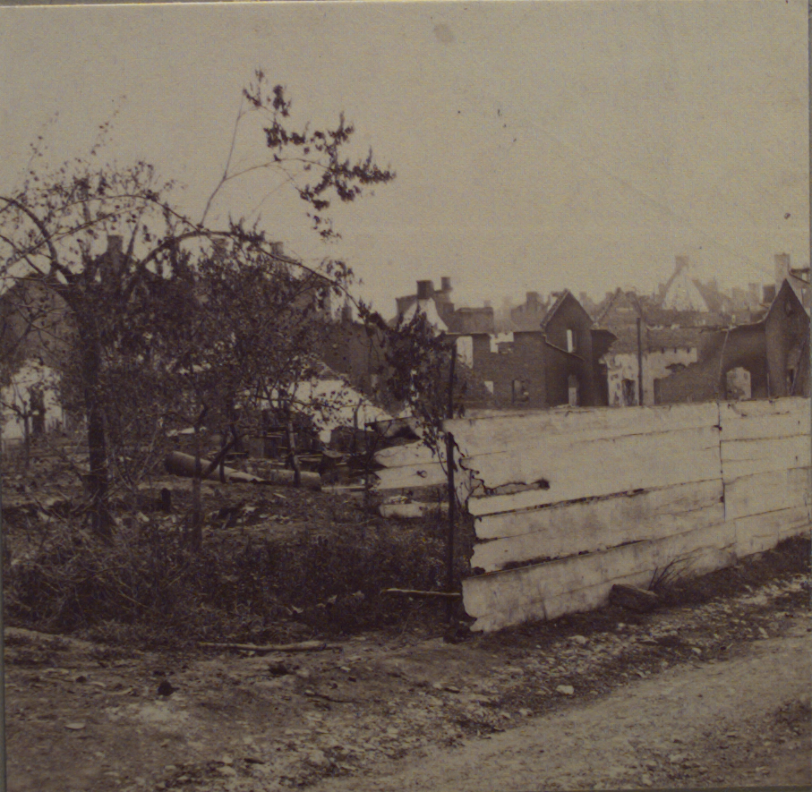

The Ruins of Chambersburg, Pennsylvania in the summer of 1863.
The Valley of the Shadow Project
The Civil War Center
The Civil War Archive Includes Regimental histories, battles, maps, etc.
Henry's Homepage